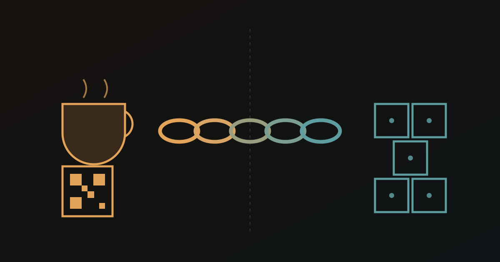

In June, a room full of people who track missiles, satellites, and supply lines gathers in San Francisco to talk about dual-use technology. We’re bringing two flasks of cacao and a stack of small cups.
Each cup answers the question that room lives by — where did this come from, and how do you know? — and it answers their way: not with a story, with a signed record.
The instinct
Spend a day among people who build for mission-critical work and you notice a single reflex. They don’t trust a claim because it’s asserted. They trust it because it’s signed, logged, and checkable against a primary source. Chain of custody. Tamper-evidence. Verify, don’t trust.
That isn’t paranoia. It’s what it takes when a wrong input has real consequences.
We pointed the same reflex at something soft. Scan the QR on the cup and you don’t land on a marketing page — you land on a farm. Oscar’s, in Bahia. Paulo’s, in Pará. Named for the people who grow it, carrying the shipment it rode in and the tree the purchase planted — every step a signed row dispatched through Edgar and anchored so no one can quietly rewrite it.
The provenance isn’t a story we tell about the cacao. It’s a property of the cacao. It resolves to the same primary sources whether or not anyone is listening — because a supply chain that crosses a continent and a dozen pairs of hands forgets the truth unless something is built to remember it on purpose.
The idea worth carrying out of the room
Here’s the part that’s bigger than chocolate.
A system built to track a cacao bag is, underneath, a system for tracking the flow of anything through many hands — components, materiel, parts whose origin and custody have to hold up. We built ours for beans because beans are what we move. Point the same machinery at a different supply chain and almost nothing changes but the label on the thing being tracked.
It fits the room twice over: the cacao on the table is itself routed by small, coordinated agents reading from one shared ledger — the same orchestration pattern the summit’s workshop teaches. The cup is, quite literally, the output of an agent-run supply chain.
Dual-use isn’t a pivot we’d make later. It’s already the shape of the tool. The cup is just the friendliest way to put it in your hand.
The cup is the conversation starter
So taste it. The QR is there if you want to follow it home — to a named farm, a real tree, a chain that holds.
If a few people walk away turning over how that plumbing maps onto whatever they move, that’s the whole of it: a working idea, passed hand to hand with a good drink.
Provenance isn’t a feature you finish. It’s a discipline you keep — one cup, one signed row, one tree at a time — and a pattern that travels a lot further than the thing it was built to track.
Join the discussion
Share your thoughts in Telegram, Beer Hall, and on the DAO web app.